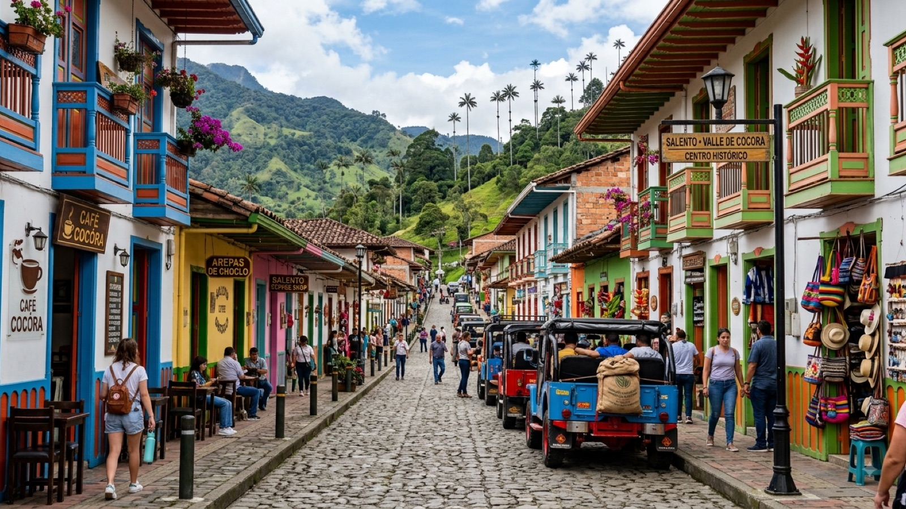

טיול בקולומביה 2026 — המדריך המלא

קולומביה היא המדינה שהכי הרבה אנשים מפחדים ממנה לפני, והכי הרבה אנשים מתאהבים בה אחרי. בבוקר אחד אתם שותים קפה בחווה בגובה 1,900 מטר בין דקלי שעווה שנראים כאילו מישהו מתח אותם מדי, ושלושה ימים אחר כך אתם רוקדים ברחוב אבן בקרטחנה בלחות של ארבעים מעלות. בין השניים יש מדינה שלמה שעברה בעשרים שנה טרנספורמציה שקשה למצוא לה מקבילה.
למטיילים ישראלים קולומביה היא צומת. מי שעולה צפונה מאקוודור מסיים בה את הרגל הדרום־אמריקאית לפני הקפיצה למרכז אמריקה, ומי שיורד דרומה נוחת בה מפנמה ומתחיל בה את דרום אמריקה. בשני הכיוונים היא נוטה להתארך: התכנון המקורי היה עשרה ימים, ואחרי שבועיים אתם עדיין באזור הקפה ומחשבים מחדש את הטיסה. המדריך הזה מרכז את כל מה שצריך לדעת לפני שיוצאים.
מתי כדאי לנסוע לקולומביה?
לקולומביה אין עונה אחת. היא יושבת על קו המשווה, ולכן הטמפרטורה כמעט לא משתנה לאורך השנה — מה שמשתנה זה הגשם, וגם הוא משתנה מאזור לאזור. השאלה החשובה באמת בקולומביה היא לא מתי אתם נמצאים אלא באיזה גובה.
שני חלונות יבשים יחסית: הראשון והמובהק מביניהם הוא דצמבר–מרץ, שהוא גם שיא העונה — קולומביאנים בחופשה, מחירים גבוהים יותר בחוף הקריבי ובקרטחנה, וצורך להזמין מראש סביב חג המולד והשנה החדשה. החלון השני הוא יולי–אוגוסט, קצר יותר ופחות עקבי, אבל נעים מאוד באזור הקפה ובמדג׳ין (שם הוא נופל על פסטיבל הפרחים, פריה דה לאס פלורס, באוגוסט). אפריל–מאי ואוקטובר–נובמבר הם החודשים הגשומים ביותר ברוב האזורים.
הגובה קובע את הטמפרטורה: בוגוטה יושבת על כ-2,600 מטר וקרירה כל השנה — 10 עד 19 מעלות, גשם אפשרי תמיד, ובלילה ממש קר. מדג׳ין יושבת על כ-1,500 מטר ומחזיקה 22–28 מעלות כל השנה, ומכאן הכינוי שלה, עיר האביב הנצחי. סלנטו ואזור הקפה נמצאים בערך באותו טווח, קצת יותר קרירים ולחים. וקרטחנה, סנטה מרתה והחוף הקריבי הם ברמת הים: חם ולח לאורך כל השנה, בלי יוצא מן הכלל.
ולמי שמגיע ישר לבוגוטה: 2,600 מטר זה לא כלום. רוב האנשים מרגישים רק קוצר נשימה קל במדרגות, אבל כדאי לקחת את היום הראשון ברוגע, לשתות הרבה מים ולא לפתוח את הטיול בערב שתייה כבד. הגוף יסתדר תוך יום-יומיים.
ויזה, כניסה ומעברי גבול
זה הסעיף שהכי חשוב לקרוא במדריך הזה, והוא גם היחיד שעשוי להשתנות בזמן הקרוב. לאורך שנים ארוכות הכניסה לקולומביה עבור בעלי דרכון ישראלי הייתה מהפשוטות ביבשת: בלי ויזה מראש, עד 90 יום שנחתמים בכניסה, וניתן להאריך ב-90 יום נוספים עד תקרה של 180 יום בשנה קלנדרית.
זה השתנה. קולומביה הסירה את ישראל מרשימת המדינות הפטורות מוויזה, ומאז בעלי דרכון ישראלי נדרשים להוציא ויזת תייר מראש לפני הטיסה. זו לא פורמליות — בלי ויזה מאושרת חברת התעופה לא תיתן לעלות למטוס.
איפה בודקים בפועל: מול קונסוליית קולומביה, ומול חברת התעופה שאיתה אתם טסים — חברות התעופה הן אלה שחוסמות עלייה למטוס, והמידע שלהן בדרך כלל המעודכן ביותר. שווה גם לעקוב אחרי עדכוני משרד החוץ לפני היציאה.
מה שכן נכון בכל תרחיש: דרכון בתוקף לחצי שנה לפחות, כרטיס יציאה מהמדינה (נבדק בפועל בצ׳ק־אין לא מעט פעמים), ולעיתים הוכחת ביטוח נסיעות. חיסון קדחת צהובה נדרש רשמית בעיקר לכניסה לאזור האמזונס ולחלק מהפארקים, ומומלץ גם לפארק טיירונה — הוציאו את הפנקס הצהוב לפני שאתם טסים.
מעברי הגבול:
- לאקוודור: איפיאלס–רומיצ׳קה (Ipiales / Rumichaca) הוא המעבר היחיד שרוב המטיילים משתמשים בו, והוא פשוט וקבוע. מאיפיאלס ממשיכים לטולקן ומשם דרומה לקיטו. בדרך, במרחק כמה קילומטרים מהמעבר, נמצאת כנסיית לאס לחאס — קתדרלה ניאו־גותית שבנויה בתוך קניון ומעל נהר, אחת התמונות הכי חזקות בקולומביה כולה. אל תעברו את הגבול בלי לעצור.
- לפנמה: אין מעבר יבשתי. נקודה. הדריאן גאפ — 100 קילומטרים של ג׳ונגל וביצות ללא כביש, שנשלטים בפועל בידי גורמים עברייניים — הוא לא מסלול טיולים ואין לנסות לחצות אותו. שתי האפשרויות הן טיסה (בוגוטה, מדג׳ין או קרטחנה לפנמה סיטי, קצת יותר משעה) או הפלגה במפרשית מקרטחנה או מקפורגנה דרך איי סן בלאס, ארבעה עד חמישה ימים.
- לוונצואלה: קיים, אך המצב שם משתנה מהר ורוב המטיילים לא נכנסים. בדקו עדכונים לפני שאתם מתקרבים לאזור הגבול.
- לברזיל ולפרו: דרך לטיסיה באמזונס, שאליה מגיעים בטיסה בלבד. משם אפשר לחצות ברגל לטבטינגה הברזילאית או לעלות על סירה במעלה או במורד הנהר.
כמה עולה טיול בקולומביה?
קולומביה נמצאת בדיוק באמצע הסולם היבשתי: זולה בבירור מצ׳ילה, מאורוגוואי ומברזיל, אך יקרה מבוליביה ומפרו. המטבע הוא פזו קולומביאני (COP), ושער החליפין נע סביב 4,000 פזו לדולר — מה שאומר שאתם מסתובבים עם שטרות של מאות אלפים ומרגישים עשירים בערך יומיים, עד שאתם מתרגלים לחלק במחשבה בארבע.
קרטחנה היא חריגה: היא יקרה ב-30% עד 50% משאר המדינה, וכדאי לתכנן לה תקציב נפרד.
| הוצאה | מחיר משוער |
|---|---|
| מיטה בחדר משותף בהוסטל | 10–18$ (בקרטחנה 15–25$) |
| חדר פרטי בסיסי | 30–50$ |
| מנת יום (menú del día) במסעדה מקומית | 3–6$ |
| ארוחה במסעדה תיירותית | 10–20$ |
| קפה מיוחד בבית קפה טוב | 1–3$ |
| אוטובוס לילה בין ערים (8–12 שעות) | 15–35$ |
| טיסת פנים מוזמנת מראש | 30–80$ |
| סיור מודרך בקומונה 13 | 15–25$ |
| כניסה לפארק טיירונה | כ-20$ לזרים |
| טרק העיר האבודה (4 ימים, הכול כלול) | 500–650$ |
| שיעור סלסה בקאלי | 10–15$ |
שורה תחתונה: מטייל תרמילאי סביר מוציא 30–40 דולר ביום כולל לינה, אוכל ותחבורה, בלי אטרקציות גדולות. שלושה שבועות בקולומביה עם טרק העיר האבודה, כמה טיסות פנים ולילה או שניים בקרטחנה יסתכמו בסביבות 1,600–2,000 דולר לאדם.
איך מתניידים בקולומביה?
קולומביה גדולה בהרבה משנדמה — פי חמישים משטח ישראל — ושלוש שלוחות של הרי האנדים חוצות אותה מצפון לדרום. המשמעות המעשית: הכבישים מפותלים, ומהירות ממוצעת של 40 קמ״ש בנסיעה בין־עירונית היא נורמה ולא תקלה.
אוטובוסים בין־עירוניים הם עדיין עמוד השדרה. הם נוחים למדי, יוצאים מתחנות מרכזיות מסודרות (terminal de transporte) ומחירם הוגן. הבעיה היחידה שלהם היא המזגן: קולומביאנים מקררים אוטובוסים לרמות ארקטיות, וכל מי שנסע פעם אחת בלי סווטשירט לומד את זה בדרך הקשה. לנסיעות לילה שווה לשלם על כיסא מסוג cama או semi-cama.
טיסות פנים — כאן זו לא מותרות אלא חשבון פשוט. מדג׳ין לקרטחנה בכביש היא נסיעה של 13 עד 16 שעות; בטיסה זו שעה ורבע, ולעיתים קרובות במחיר דומה או זול יותר מאוטובוס לילה. אביאנקה, לטאם, ווינגו ו-Clic מפעילות רשת פנימית צפופה. ההיגיון: כל מקטע שהאוטובוס עושה בו יותר מ-10 שעות — בדקו קודם טיסה.
קולקטיבו — מיניוואן או ג׳יפ משותף שיוצא כשהוא מתמלא — הוא הדרך לכל מה שאוטובוס גדול לא מגיע אליו: מסלנטו לעמק קוקורה (בג׳יפים אמריקאיים ותיקים שנקראים Willys, ואם אין מקום בפנים נוסעים בעמידה מאחור), מסנטה מרתה למינקה או לטיירונה, ומגואטפה לאל פנול. זול, תדיר, ובלי לוח זמנים מדויק.
בתוך הערים: בבוגוטה יש את ה-TransMilenio (מהיר, וגם המקום המובהק ביותר בעיר לכייסות — תיק מלפנים), במדג׳ין יש מטרו נקי ומדויק שהעיר מתגאה בו, ובנוסף את המטרוקבל — רכבלים שמשמשים תחבורה ציבורית לשכונות ההר ומספקים דרך אגב את הנוף הכי טוב בעיר. למוניות — תמיד דרך אפליקציה (Uber, DiDi, Cabify או InDrive), אף פעם לא בעצירה ברחוב.
המסלול המומלץ — שלושה שבועות בקולומביה
המסלול הזה מתחיל בבוגוטה ומסתיים בקריביים, מה שנוח לרוב האנשים: מסיימים בחוף. הוא עובד מצוין גם בכיוון ההפוך, למי שמגיע מהצפון.
- ימים 1–3 · בוגוטה — הרובע הקולוניאלי לה קנדלריה, מוזיאון הזהב (אחד המוזיאונים הטובים ביבשת), עלייה למונסראטה לתצפית על עיר שנמתחת עד האופק, וסיור גרפיטי שמסביר יותר על ההיסטוריה של קולומביה מכל ספר. אם אתם שם בראשון — הסיקלוביה סוגרת 120 קילומטרים של כבישים לרוכבי אופניים ולהולכי רגל.
- ימים 4–6 · סלנטו ואזור הקפה — עיירה של בתים בצבעי סוכריות בין מטעי קפה. הזריחה בעמק קוקורה, בין דקלי שעווה בגובה 60 מטר שנראים כמו טעות בקנה מידה, היא אחת התמונות שלא עוזבות. הוסיפו סיור בחוות קפה קטנה — מהגרגר ועד הכוס — ואת פילנדיה השכנה, שקטה ויפה לא פחות.
- ימים 7–9 · מדג׳ין (Medellín; מופיעה בעברית גם כ״מדיין״) — העיר שהייתה בשנות התשעים המסוכנת בעולם והיום היא סיפור ההצלחה העירוני של היבשת. סיור בקומונה 13 עם מדריך מקומי, מדרגות נעות שמחליפות 350 מדרגות בטון, גרפיטי ורפ; רובע אל פובלדו לחיי לילה; והמטרוקבל אל פארק ארבי לנוף.
- יום 10 · גואטפה — 750 מדרגות במעלה סלע ענק (אל פניול) שמשקיפות על אגם מסועף שנראה כמו פאזל, ולמטה העיירה הכי צבעונית בקולומביה, עם תבליטי גבס מצוירים על כל בית. אפשר כטיול יום ממדג׳ין, אבל לישון שם לילה אחד אחרי שכל אוטובוסי היום חוזרים — זה שווה הרבה יותר.
- ימים 11–13 · קרטחנה (טיסה ממדג׳ין) — עיר מוקפת חומה מהמאה ה-16, בוגנוויליה שנשפכת ממרפסות עץ, וחום שלא מרפה. לינה ברובע חטסמני, שהוא הצד החי והזול יותר של העיר. משם אפשר לצאת לאיי רוסאריו או לאיסלה בארו ליום חוף.
- ימים 14–15 · סנטה מרתה ומינקה — סנטה מרתה עצמה היא בעיקר בסיס לוגיסטי, אבל מינקה, 45 דקות במעלה ההר, היא כפר קטן בין מטעי קפה וקקאו עם ערסלים, מפלים ותצפית שקטה. מקום מצוין להתאושש בו לפני הטרק או אחריו.
- ימים 16–17 · פארק טיירונה — ג׳ונגל שנוגע בחופים לבנים בין סלעי ענק. אפשר לישון בערסל בקאבו סאן חואן ולראות זריחה מהחוף. שימו לב: הפארק נסגר בכמה תקופות בשנה לצורכי התאוששות אקולוגית ובכבוד לקהילות הילידיות — בדקו לפני שאתם בונים על זה.
- ימים 18–21 · טרק העיר האבודה — ארבעה ימים בסיירה נבאדה, בג׳ונגל לח, עם חציות נהר, לינה בערסלים ו-1,200 מדרגות אבן בסוף שמובילות למדרגות העיר האבודה — עיר טאירונה שנבנתה מאות שנים לפני מאצ׳ו פיצ׳ו ונחשפה מחדש רק ב-1972. הסיום המושלם לקולומביה.
יש עוד שבוע? הוסיפו את קאלי, בירת הסלסה של העולם, שבה שיעור אחד יגלה לכם עד כמה אתם לא יודעים לרקוד; את סן חיל, בירת ספורט האתגר של קולומביה (פאראגליידינג, רפטינג, מערות) ואת בריצ׳רה השכנה, שנחשבת לעיירה הקולוניאלית היפה במדינה; את סן אנדרס ואת פרובידנסיה בקריביים; את מדבר טטקואה לשמי לילה; או את פופאיאן וסן אגוסטין בדרום, בדרך לאקוודור, עם פסלי אבן ארכיאולוגיים בני אלפי שנים.
מה חובה לראות בקולומביה?
חמש החוויות שכמעט אף אחד לא מוותר עליהן:
- טרק העיר האבודה (Ciudad Perdida) — ארבעה ימים (או חמישה בקצב רגוע) דרך הסיירה נבאדה אל אתר ארכיאולוגי שהג׳ונגל בלע. המחיר אחיד בין כל המפעילים המורשים, ולכן הבחירה היא לפי אווירה וקבוצה ולא לפי מחיר. אין אפשרות לעשות אותו עצמאית.
- עמק קוקורה ואזור הקפה — דקלי השעווה הגבוהים בעולם, על רקע גבעות ירוקות ועננים נמוכים. צאו מוקדם: אחרי עשר בבוקר העמק מתמלא בערפל וגם באנשים.
- קומונה 13 במדג׳ין — לא אטרקציה ויזואלית בלבד אלא שיעור בהיסטוריה עירונית, שמסופר על ידי אנשים שגדלו בשכונה בתקופה הקשה. קחו מדריך מקומי; בלי ההסבר זה רק גרפיטי יפה.
- העיר העתיקה של קרטחנה — לטייל בה בין חמש לשבע בערב, כשהחום נשבר והאור נעשה זהוב. חטסמני בערב, כיכר טרינידאד, ורוכלי לימונדת קוקוס.
- פארק טיירונה — הנקודה שבה הרי הסיירה נבאדה, שמגיעים ל-5,700 מטר, מגיעים אל הים הקריבי בתוך פחות מ-50 קילומטרים אוויריים. שילוב שלא קיים כמעט בשום מקום בעולם.
האם בטוח לטייל בקולומביה?
זו השאלה הראשונה שכל אחד שואל, וההורים שואלים אותה פעמיים. התשובה הכנה: קולומביה של היום היא לא קולומביה של שנות התשעים, וההבדל אינו קוסמטי. מדג׳ין, שהייתה העיר עם שיעור הרצח הגבוה בעולם, היא היום עיר עם מטרו, רכבלים ותיירות פנים שוקקת. מסלול התרמילאים המרכזי — בוגוטה, סלנטו, מדג׳ין, קרטחנה, סנטה מרתה — עובר במקומות שחיים מתיירות, עם זרם קבוע של מטיילים והוסטלים מצוינים.
ובכל זאת, קולומביה דורשת ערנות שאקוודור או צ׳ילה לא דורשות. הסיכון הריאלי הוא פשיעת רכוש — כייסות, חטיפת טלפון מהיד, שוד בסמטה חשוכה — ולא אלימות פוליטית או חטיפות, שהיום כמעט אינן נוגעות למטיילים.
למקומיים יש ביטוי שמסכם את כל תורת הביטחון בשלוש מילים: no dar papaya. מילולית, ״אל תיתן פפאיה״; בפועל, אל תגיש את עצמך על מגש. טלפון שמונח על שולחן בבית קפה ברחוב, מצלמה שמתנדנדת על הצוואר, שרשרת זהב, ארנק בכיס אחורי, משיכה של חבילת שטרות בכספומט ברחוב — כל אלה הם פפאיה. הקולומביאנים עצמם מקפידים על זה, וזו לא פרנויה אלא נורמה חברתית.
הכללים שכן שווים הקפדה:
- אל תלכו ברגל בלילה בשכונות שאתם לא מכירים, גם לא מרחק שלושה רחובות. אובר או DiDi עולים דולריים בודדים.
- מוניות רק דרך אפליקציה. עצירת מונית ברחוב בבוגוטה או בקאלי היא הסיכון הקלאסי ל״נסיעת המיליונר״ — סחיטה מול כספומטים.
- חיי לילה: אף פעם לא להשאיר משקה ללא השגחה, ולא לקבל משקה או סיגריה מזרים. סמים כמו סקופולמין (בורונדנגה) הם בעיה אמיתית ומתועדת באזורי הבילוי במדג׳ין ובקרטחנה, וכך גם פגישות מאפליקציות היכרויות שמסתיימות בדירה ריקה ובחשבון בנק ריק. אל תסגרו פגישה ראשונה בחדר שלכם.
- אזורים שנשארים מחוץ למסלול: קטטומבו, פנים אזור צ׳וקו, אזורים כפריים בקאוקה ובנריניו, אזור הגבול עם ונצואלה ובוודאי הדריאן. הערים הגדולות והחוף הקריבי אינם באותה קטגוריה בכלל.
- כספומטים — רק בתוך קניון, בנק או שדה תעופה, ולא בקיר ברחוב. משכו סכומים קטנים ופצלו את הכסף בין כמה מקומות.
- אם שודדים אתכם — תנו הכול, מיד. טלפון אפשר לקנות. הכלל הזה חוזר בכל שיחה עם מקומיים, וכדאי להפנים אותו מראש.
נקודה אחרונה, ופחות דרמטית: קולומביאנים הם מהאנשים החמים והעוזרים שתפגשו ביבשת, והם גאים עד עומק הנשמה בכך שהמדינה השתנתה. שאלה תמימה בספרדית עילגת תזכה אתכם בדרך כלל בליווי אישי עד היעד. הערנות היא כלפי מצבים, לא כלפי אנשים.
שאלות נפוצות
כמה ימים צריך לקולומביה?
שלושה שבועות הם המספר הנכון: הם מאפשרים לראות את בוגוטה, אזור הקפה, מדג׳ין וגואטפה, קרטחנה והחוף הקריבי, ועדיין להשאיר מקום לטרק העיר האבודה. בשבועיים אפשר לעשות מסלול הגיוני אם מוותרים על הטרק או על אחד האזורים — לרוב על הדרום. חודש מאפשר להוסיף את קאלי, סן חיל, מדבר טטקואה או סן אנדרס בלי להרגיש שרצים.
האם בטוח לטייל בקולומביה?
מסלול התרמילאים המרכזי נחשב היום בטוח יחסית, ועוברים בו עשרות אלפי מטיילים בשנה. הסיכון העיקרי הוא פשיעת רכוש בערים ולא אלימות פוליטית. הכללים המעשיים: לא להסתובב עם טלפון ביד ברחוב, מוניות רק דרך אפליקציה, לא ללכת ברגל בלילה בשכונות שלא מכירים, לא להשאיר משקה ללא השגחה בחיי הלילה, ולהימנע מאזורים כפריים מסוימים כמו קטטומבו, פנים צ׳וקו, אזורי כפר בקאוקה ובנריניו ואזור הדריאן.
כמה עולה טרק העיר האבודה, ושווה לעשות אותו?
הטרק נמשך ארבעה ימים ברוב החברות (יש גם אפשרות של חמישה, בקצב נוח יותר), והמחיר אחיד בין כל המפעילים המורשים ונע סביב 500 עד 650 דולר לאדם — כולל הסעות, אוכל, לינה בערסלים ומדריך. אין אפשרות לעשות אותו עצמאית, כי האתר נמצא בשטח קהילות ילידיות. זה חם, לח, מזיע ולא זול, אבל רוב מי שעושה אותו מדרג אותו כשיא של קולומביה. קחו נעליים שלא אכפת לכם שיירטבו — הן יירטבו.
מה עם כספומטים, מזומן וסים?
כרטיסי אשראי מתקבלים ברוב העסקים בערים, אבל קולקטיבו, שווקים, חוות קפה וכפרים קטנים הם מזומן בלבד. כספומטים גובים עמלה קבועה לכל משיכה, ולכן עדיף למשוך סכומים גדולים יחסית בפעם אחת — Davivienda ו-Bancolombia נחשבים לנוחים ביותר. לסים: Claro נותנת את הכיסוי הרחב ביותר מחוץ לערים, Movistar ו-Tigo זולות מעט יותר; חבילת נתונים מקומית עולה כמה דולרים בודדים לחודש, ואפשר גם eSIM אם לא מתחשק להתמודד עם רישום בחנות.
האם ישראלים צריכים ויזה לקולומביה?
כרגע כן. קולומביה הסירה את ישראל מרשימת המדינות הפטורות מוויזה, ובעלי דרכון ישראלי נדרשים להוציא ויזת תייר מראש לפני הטיסה — בלעדיה חברת התעופה לא תאפשר עלייה למטוס. עם זאת, ישראל וקולומביה הודיעו על הסכמה לבטל הדדית את דרישת הוויזה, ולפי ההודעות התהליך אמור להתחיל ב-7 באוגוסט 2026. מכיוון שהנושא בתנועה, חובה לבדוק את המצב העדכני מול קונסוליית קולומביה ומול חברת התעופה ביום שקונים כרטיס. בכל מקרה נדרשים דרכון בתוקף לחצי שנה לפחות וכרטיס יציאה מהמדינה.
כמה עולה טיול בקולומביה ליום?
מטייל תרמילאי מוציא בממוצע 30 עד 40 דולר ביום: מיטה בהוסטל 10 עד 18 דולר, מנת יום במסעדה מקומית 3 עד 6 דולר, ותחבורה. קולומביה זולה מצ׳ילה ומברזיל אך יקרה מבוליביה ומפרו, וקרטחנה יקרה משמעותית משאר המדינה. אטרקציות גדולות כמו טרק העיר האבודה או טיסות פנים מוסיפות על התקציב היומי.
כמה עולה טרק העיר האבודה ושווה לעשות אותו?
הטרק לסיודד פרדידה נמשך ארבעה ימים ברוב החברות, אפשרות של חמישה קיימת בקצב רגוע יותר, והמחיר אחיד בין כל המפעילים המורשים ונע סביב 500 עד 650 דולר לאדם, כולל אוכל, לינה בערסלים ומדריך. אין אפשרות לעשות אותו עצמאית. זה חם, לח ומזיע, אבל זו אחת החוויות החזקות בקולומביה — ורוב מי שעושה אותו מדרג אותה כשיא הטיול.
בקולומביה כולם שואלים אותך כמה זמן אתה נשאר, ואף אחד לא מאמין לתשובה שלך. גם אתה לא תאמין לה בעוד שבועיים.